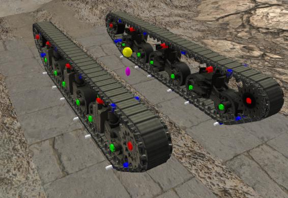
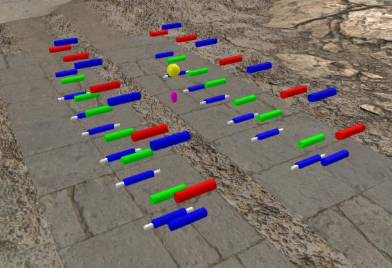

Visual Markers and how they are used.
When you load a tank, Tank Exporter reads the visual files and gathers information such as textures and transforms.
Along with this information, TE grabs the locations of the Blendbones from the chassis.visual_processed file.
Inside the chassis visual file there is a stack of information about deforming.
This is the Chassis_RShape stack from a typical Chassis.visual_processed file.
<node>WD_R0_BlendBone</node>
<node>WD_R1_BlendBone</node>
<node>WD_R2_BlendBone</node>
<node>WD_R3_BlendBone</node>
<node>WD_R4_BlendBone</node>
<node>W_R5_BlendBone</node>
<node>W_R4_BlendBone</node>
<node>W_R3_BlendBone</node>
<node>W_R2_BlendBone</node>
<node>W_R1_BlendBone</node>
<node>W_R0_BlendBone</node>
<node>V_BlendBone</node>
<node>Track_R2_BlendBone</node>
<node>Track_R3_BlendBone</node>
<node>Track_R4_BlendBone</node>
<node>Track_R5_BlendBone</node>
<node>Track_R0_BlendBone</node>
<node>Track_R1_BlendBone</node>
<node>Tank_BlendBone</node>
These locations are shown on the screen by Color Coded Visual Markers.
There are 5 different types.
Blue colored markers are Track_ locations with in the Track Section of the visual file.
All other markers are from the Chassis sections in the visual file.
White markers have the same locations as in the Track_ markers but are in the chassis blendbone stack.
Red markers are WD_ wheel locations that never move with the terrain.
Green makers are the W_ wheel locations of wheels that move/deflect with the terrain.
The Yellow Ball is the V_Blendbone location.
The Fuchsia colored is the Tank_BlendBone location. Not all stacks have a tank_Blendbone location.
These markers are exported with the FBX and can be used to modify the location of the wheels in 3DS Max or similar program.
Moving a green marker will cause the wheel associated with it to move as well. There is no need to move a wheel. You can scale them or edit their meshes.
You can delete entire wheels and their markers and the game loads the tanks correctly.
One thing that is critical is the UVs.. There will be a lot more information about this in "The Process" pages.
Here are a couple of images with the Gun, Turret and Hull hidden so you can see the markers more clearly.

